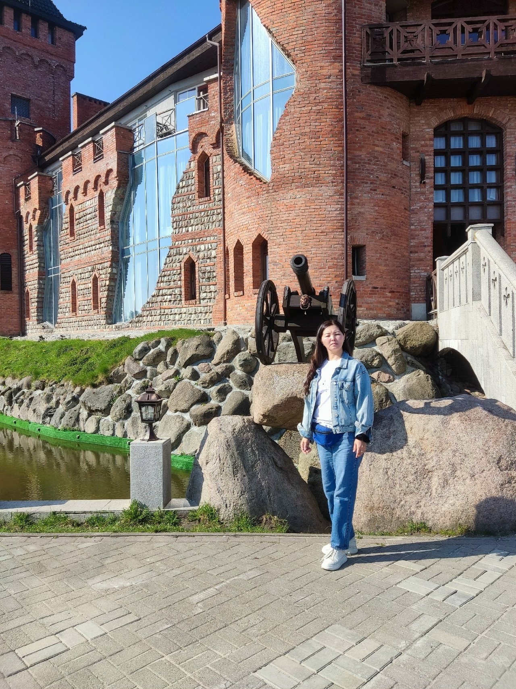
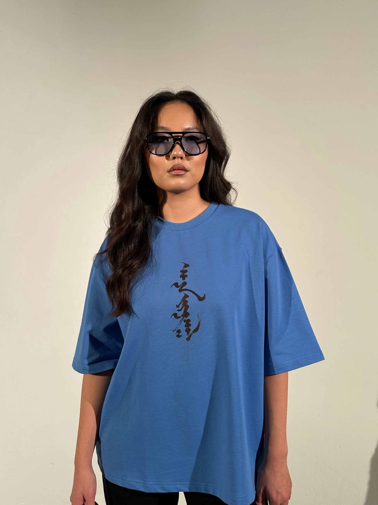
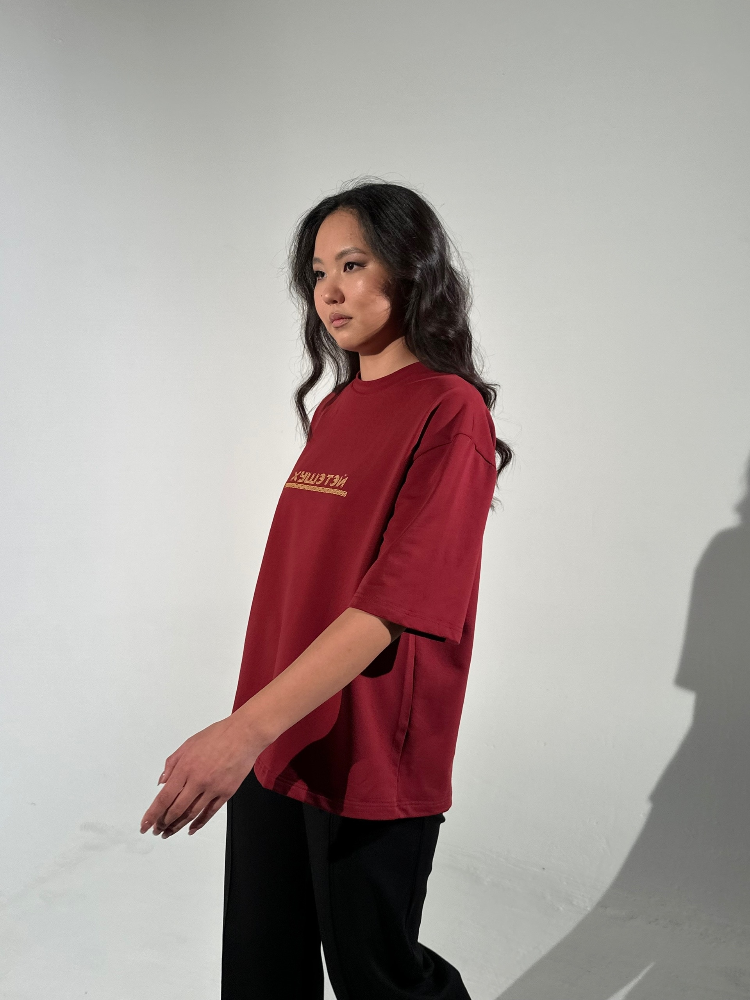
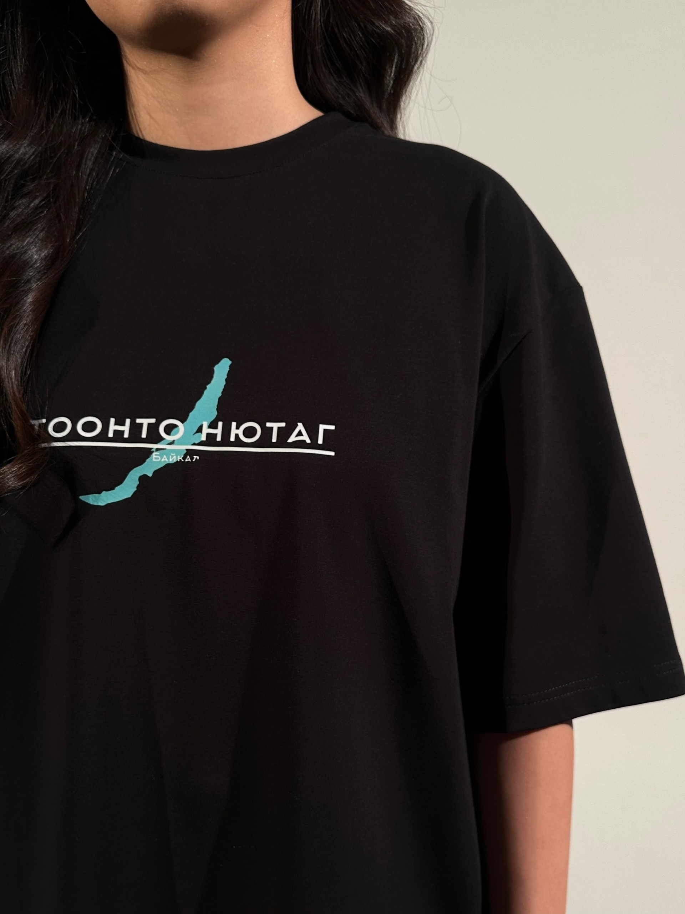
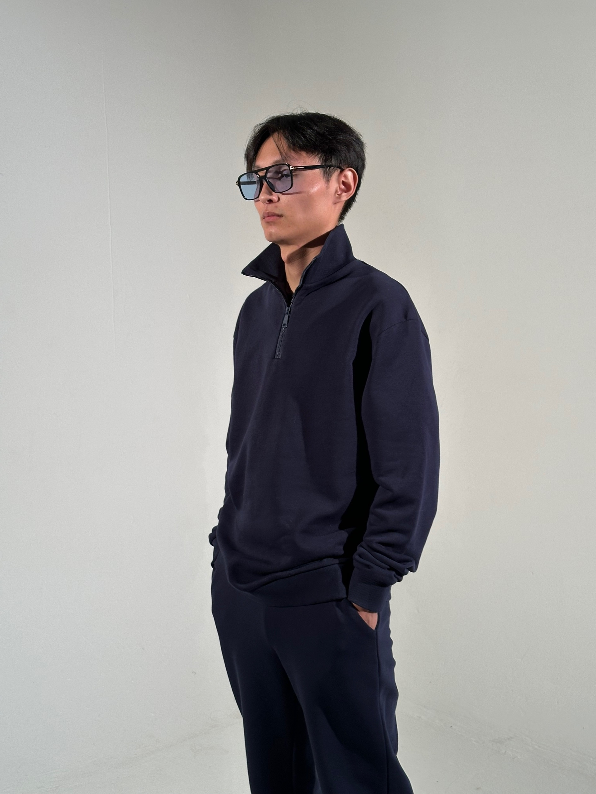
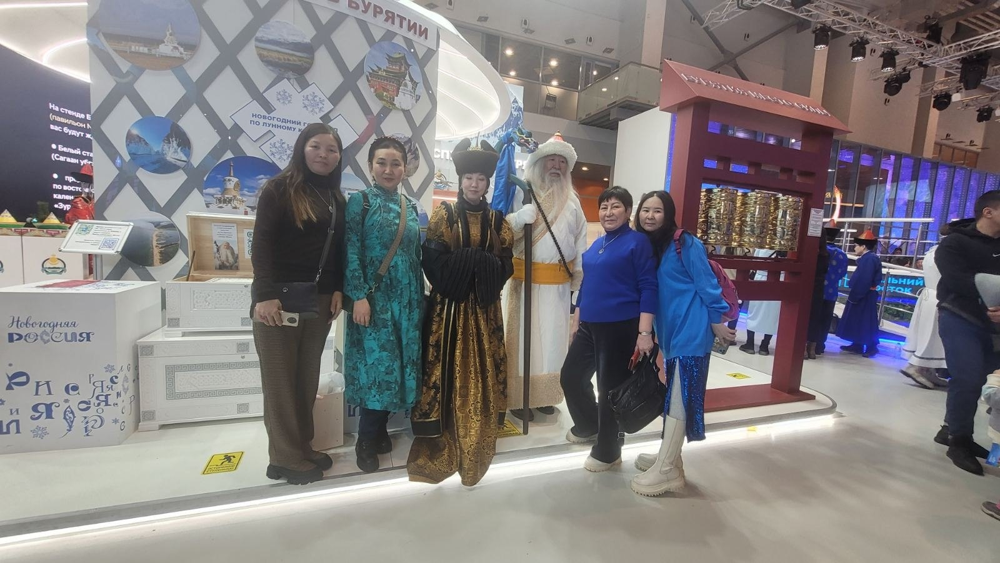
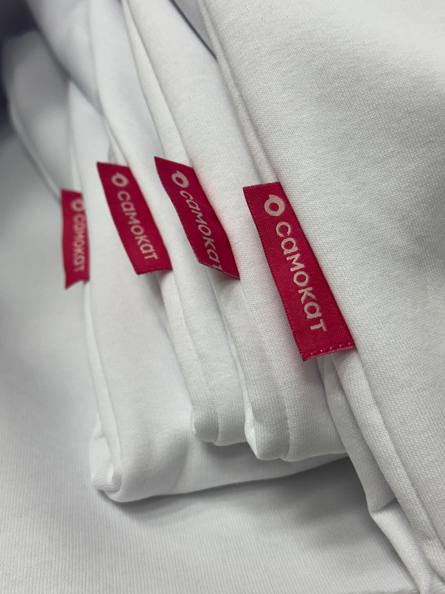

О мастере
Мой главный дар — от бабушки. Именно она научила меня чувствовать ткань и видеть красоту в простых вещах. В каждой моей работе живет этника — переплетение древних орнаментов и современных линий. Я не придумываю образы специально: они приходят сами, словно из ниоткуда, подсказанные ритмом жизни или музыкой. У меня обостренное чувство стиля, поэтому я не шью «как у всех». Я создаю уникальный формат одежды, где каждая вещь — это характер. Зовите меня просто швеей, но для меня это искусство чувствовать душу человека через нить и иглу.

Мои коллекции
-

Футболка голубого цвета
-

Футболка с бордовом цвете
-

Футболка с логотипом
-

Мужская рубашка
-

Участие в международном конкурсе модельеров
"Торгон зам" -

Лейбл
Пошив на заказ
-
Индивидуальный подход
Каждая вещь создается специально под ваши параметры и пожелания.
-
Этнические мотивы
Сочетание древних орнаментов и современных линий в каждой работе
-
Ручная работа
Внимание к деталям и любовь к ремеслу в каждом шве.
-
✨Одежда для ритуальных практик
...Мой уникальный формат — это когда вещь живет своей жизнью, а вы лишь подхватываете ее мелодию. Помимо городской одежды, принимаю заказы на ритуальные костюмы, в том числе — шитье для шаманов. Сохраняю аутентичность кроя, но адаптирую под удобство современного человека.
Отзывы
-
Эльвира
Норжима- это мастер от бога! Общее видение картины, конечного результата дают шикарный результат. Норжима сшила мне несколько костюмов и все великолепны! Качество тоже говорит о себе. Швы от фабричных не отличить. Для себя решила, что лучше буду заказывать у нее, чем покупать в магазине. Цены адекватные. И вообще ей надо уже свой брэнд создавать
-
Оюна Геннадьевна
Новые платья с шапками очень красиво вписались в общий ансамбль. В них было очень комфортно, не жарко и кожа дышала. И цвета 😍 Спасибо нашей Норжииме!